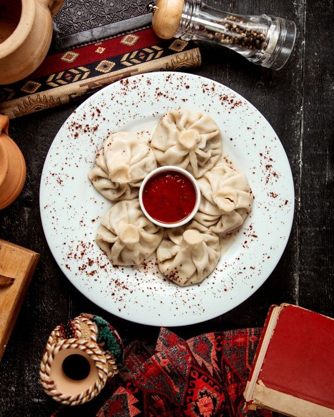
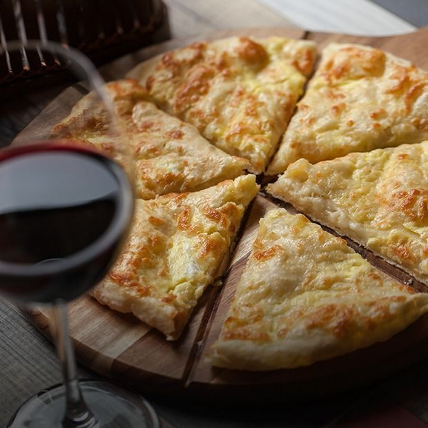
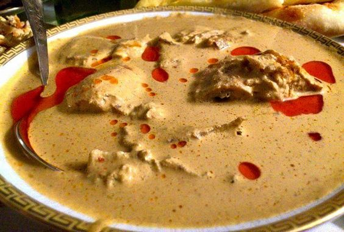
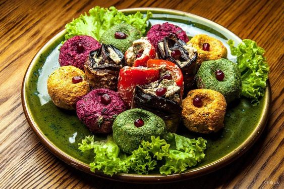

Georgian Food
These are some of the most popular Georgian dishes and how to make them.
Khinkali
Khinkali is a dumpling in Georgian cuisine. It is made of twisted knobs of dough, stuffed with meat, fish or vegetables and spices.
Ingredients for 30 khinkali:
- 1.4 kilo of flour
- 2 eggs
- 450 ml of warm water
- 700 grams of ground beef and pork mix
- 3/2 tablespoons salt
- 1/2 tsp of dried red pepper
- 1/4 tsp ground caraway seed
- 2 small onions
- 500 ml of water
Instructions:
- In a large bowl combine the flour with the salt. Make a well in the center and add the eggs. Whisk together using a fork.
- Add the water to the center and fold the flour into the liquid. Knead the dough by hand until it feels elastic.
- Cover the kneaded dough and let it rest for at least 30 minutes.Roll the dough very thin and cut into circles 3 inches in diameter.
- Add a dollop of the meat filling to a dough circle and fold the edges over. Pinch the edges together to seal.
- Repeat with the remaining ingredietns.Boil a large pot of water and add a few Khinkali at a time.
- The dumplings will eventually float to the top, then allow them to simmer for 2-4 minutes until cooked.
Khachapuri
Khachapuri is a Georgian cheese bread made with a yeasted dough and melted cheese. It's typically served as an appetizer or breakfast food.
Ingredients:
- 1 cup warm water
- 1 teaspoon active dry yeast
- 2 1/2 cups all purpose flour
- 1 teaspoon salt
- 2 tablespoons olive oil
- 2 cups shredded mozzarella cheese
- 3/4 cup crumbled feta cheese
- 1/4 cup butter, melted
- 2 eggs
- 1/4 cup chopped fresh parsley
Instructions:
- In a large bowl, mix together the warm water and yeast. Let sit for 5 minutes until the yeast has dissolved.
- Add the flour, salt, and olive oil to the bowl and mix until a dough forms. Knead the dough for 5 minutes until it is elastic and smooth.
- Cover the bowl with a damp cloth and let the dough rise for 1 hour.
- Preheat oven to 375°F (190°C). Line a baking sheet with parchment paper.
- Divide the dough into four equal pieces and roll each piece out into a 9-inch (23 cm) round.
- Place the rounds on the prepared baking sheet.
- Mix together the mozzarella and feta cheeses and divide the mixture among the four rounds, spreading it in an even layer and leaving a 1/2-inch (1 cm) border.
- Fold the edges of the dough inwards and pinch them to seal.
- Brush the edges of the dough with the melted butter and bake for 25 minutes until golden brown.
- Remove from the oven and crack an egg into the center of each round.
- Return the khachapuri to the oven and bake for an additional 15 minutes until the egg whites are set and the yolks are still runny.
- Garnish with parsley and serve hot.
Satsivi
Satsivi is a thick paste made from walnuts and served cold It is used in a variety of meat (usually chicken and turkey), fish and vegetable dishes.
Ingredients:
- 1.5 kilo whole chicken (or turkey)
- 700 grams of walnuts
- 5 medium sized onions
- 4 cloves of garlic
- 2 tbs of white wine vinegar
- 1 tsp of dried coriander
- 1 tsp of blue fenugreek
- 1 heaped tsp of dried marigold
- 1 heaped tsp of dried red pepper
- Half tsp of cinnamon
- 5 crushed cloves
- Salt (amount dependent upon personal preference)
Instructions:
- Add 2 liters of water to a deep pot and add the chicken. Heat on a medium heat until parboiled.
- Remove the chicken from the pot and add to a roasting tray. Do not discard the water that the chicken was boiled in as this will be needed later.
- Use some of the surface oil in the pot to baste the chicken. There should be no need for additional oil
- Roast the chicken on 180 C heat until cooked.
- Cut the roasted chicken into medium sized pieces.
- Finely chop the onions and add to a pan with a little of the surface oil from the pot use to parboil the chicken. Fry for 6-7 minutes.
- Add the fried onions to a mixing bowl and use a blender to make them smooth.
- Add the onions to the pot used to par boil the chicken.
- Grind the walnuts. We used a meat grinder. If the walnuts are not old, the grinding process will produce some walnut oil. Save this.
- Add 1 tsp of dried coriander, 1 tsp of blue fenugreek, 1 heaped tsp of dried marigold, half tsp of cinnamon, 5 crushed cloves.
- Mix by hand and use your hands to crush the mixture to extract any remaining oil from the walnuts. Save the oil.
- Add the crushed red pepper/garlic/salt mixture, together with 2 tbs of white wine vinegar, to the ground walnuts and mix thoroughly.
- Gradually add water to the nut mixture from the pot used to parboil the chicken, mixing as the water is added.
Keep adding and mixing until the mixture has a smooth consistency, like in the picture below.
Once mixed, hold a sieve over the pot used to parboil the chicken and pour the mixture into the pot.
Discard any remaining large pieces left in the sieve. - Add the chicken pieces to the pot, bring to the boil and remove from the heat. Allow to completely cool before serving.
Pkhali
Khachapuri is a Georgian cheese bread made with a yeasted dough and melted cheese. It's typically served as an appetizer or breakfast food.
Ingredients:
- 1/2 pounds baby spinach
- 2 cups mixed soft herbs cilantro, dill, parsley
- 2/3 cups walnut halves
- 2 cloves garlic minced
- 1 teaspoon balsamic vinegar or to taste
- 1/2 teaspoon ground coriander
- salt
- freshly ground black pepper to taste
- pomegranate seeds for garnish
Instructions:
- Bring a large pot of water to a boil. Add the spinach and cook for 2 minutes, until soft. Fish the spinach out of the pot and place it in a large Put it under cold running water until cool enough to handle. Squeeze the spinach with your hands to remove excess liquid.
- Meanwhile, in a food possessor, pulse the cilantro, parsley, walnuts, and garlic until finely chopped. Add the spinach and process for about 30 to 60 seconds, or until smooth.
- Season to taste with the vinegar and spices.
- Serve the pkhali right away or refrigerate until needed. Georgians say it’s always better the next day!
Eggplant Walnut Rolls
Khachapuri is a Georgian cheese bread made with a yeasted dough and melted cheese. It's typically served as an appetizer or breakfast food.
Ingredients:
- 1 cup warm water
- 1 teaspoon active dry yeast
- 2 1/2 cups all-purpose flour
- 1 teaspoon salt
- 2 tablespoons olive oil
- 2 cups shredded mozzarella cheese
- 3/4 cup crumbled feta cheese
- 1/4 cup butter, melted
- 2 eggs
- 1/4 cup chopped fresh parsley
Instructions:
- In a large bowl, mix together the warm water and yeast. Let sit for 5 minutes until the yeast has dissolved.
- Add the flour, salt, and olive oil to the bowl and mix until a dough forms. Knead the dough for 5 minutes until it is elastic and smooth.
- Cover the bowl with a damp cloth and let the dough rise for 1 hour.
- Preheat oven to 375°F (190°C). Line a baking sheet with parchment paper.
- Divide the dough into four equal pieces and roll each piece out into a 9-inch (23 cm) round.
- Place the rounds on the prepared baking sheet.
- Mix together the mozzarella and feta cheeses and divide the mixture among the four rounds, spreading it in an even layer and leaving a 1/2-inch (1 cm) border.
- Fold the edges of the dough inwards and pinch them to seal.
- Brush the edges of the dough with the melted butter and bake for 25 minutes until golden brown.
- Remove from the oven and crack an egg into the center of each round.
- Return the khachapuri to the oven and bake for an additional 15 minutes until the egg whites are set and the yolks are still runny.
- Garnish with parsley and serve hot.